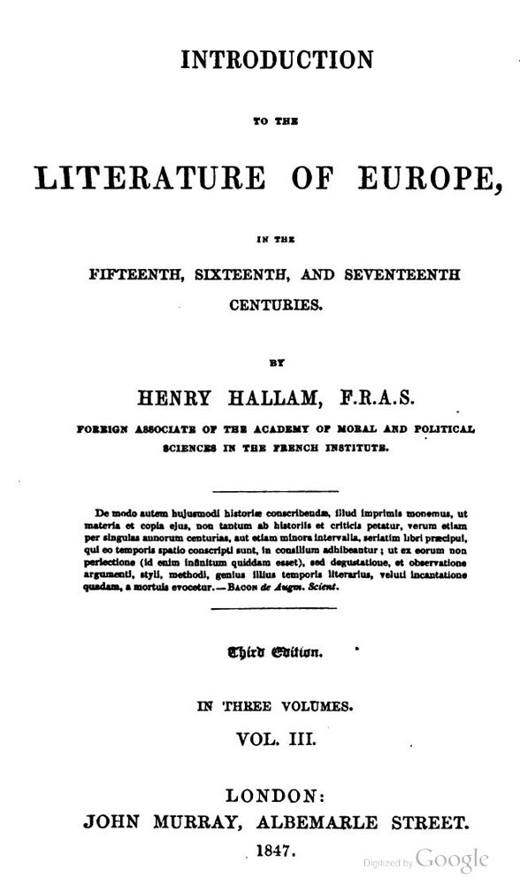
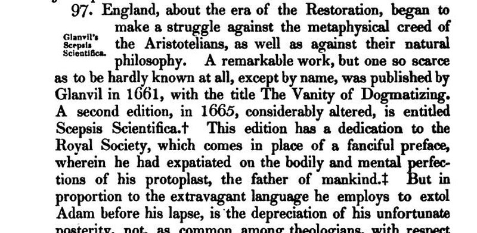
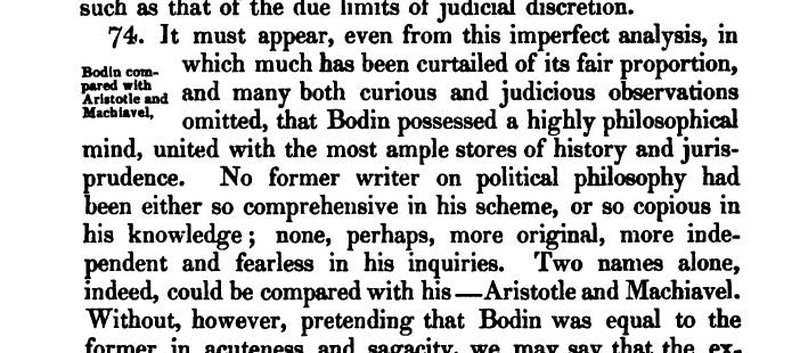
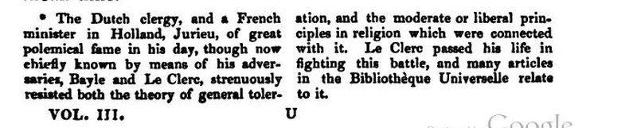
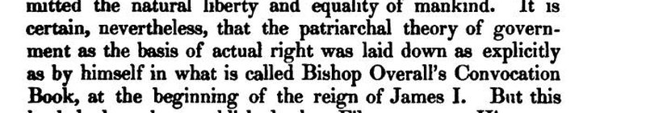
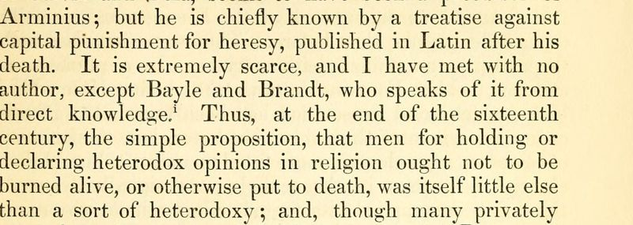
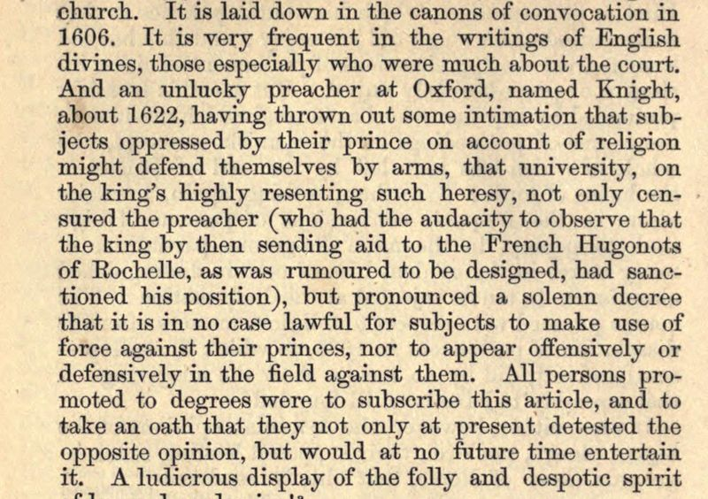
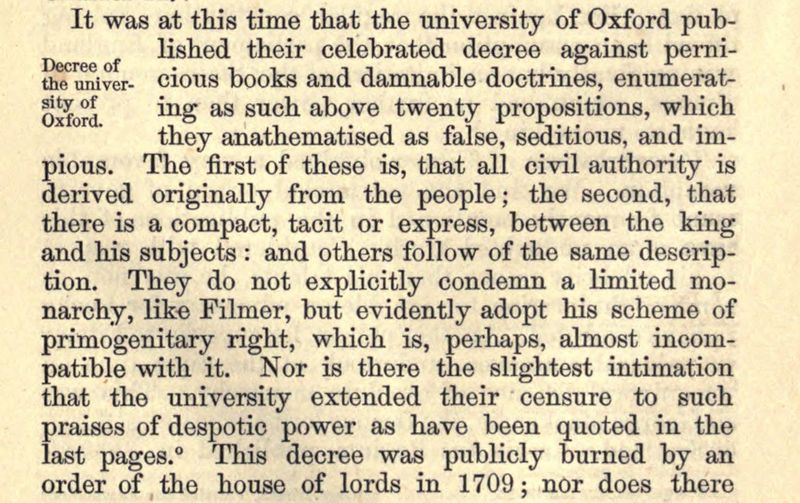

Glanvill’s Vanity of Dogmatizing (Literature of Europe, ch. III § 97)

English: Introduction to the Literature of Europe, 1837, vol. IV, p. 263 (scan; image = page + 25), “From 1650 to 1700”, ch. III, § 97, margin “Glanvil’s Scepsis Scientifica”. Lecky (ch. I, note 118) cites “vol. iii. pp. 358–362”: that is the three-volume third edition (London: Murray, 1847), vol. III, where § 97 begins on p. 358 (scan n377; Lecky’s pages match). Highlighted: the facts Lecky repeats.

97. England, about the æra of the Restoration, began to make a struggle against the metaphysical creed of the Aristotelians, as well as against their natural philosophy. A remarkable work, but one so scarce as to be hardly known at all, except by name, was published by Glanvil in 1661, with the title, The Vanity of Dogmatizing. A second edition, in 1665, considerably altered, is entitled Scepsis Scientifica. This edition has a dedication …
[Hallam’s footnote:] This book, I believe, especially in the second edition, is exceedingly scarce. The editors, however, of the Biographia Britannica, art. Glanvil, had seen it, and also Dugald Stewart. The first edition, or Vanity of Dogmatizing, is in the Bodleian Catalogue, …
On the next page (read in the OCR only) Hallam goes on to the dedication to the Royal Society, which replaced a “fanciful preface” on the perfections of Adam before the Fall, and to the book’s attack on the Peripatetic philosophy as “captious and verbal”. Lecky’s account of the book’s three forms and its rarity follows Hallam; Lecky’s “short essay” stage before the 1661 treatise is not in this passage.
Bodin beside Aristotle and Machiavelli (Literature of Europe, 1847, vol. II, p. 68)
English: 3rd ed., London: Murray, 1847, vol. II, Part II ch. IV § 74, p. 68, scan n85, margin “Bodin compared with Aristotle and Machiavel”.

74. It must appear, even from this imperfect analysis, in which much has been curtailed of its fair proportion, and many both curious and judicious observations omitted, that Bodin possessed a highly philosophical mind, united with the most ample stores of history and jurisprudence. No former writer on political philosophy had been either so comprehensive in his scheme, or so copious in his knowledge; none, perhaps, more original, more independent and fearless in his inquiries. Two names alone, indeed, could be compared with his—Aristotle and Machiavel. Without, however, pretending that Bodin was equal to the former in acuteness and sagacity …
| Hallam (1847, p. 68) | Lecky (ch. I, note 86) |
|---|---|
| inquiries. Two names alone | enquiries—two men alone |
| compared with his | compared with him |
Lecky’s page (“Hist. of Lit. vol. ii. p. 68”) matches this edition, and the quotation is close. “Two names … with his [name]” becomes, in Lecky’s print, “two men … with him” (read on Lecky’s own page, vol. I p. 96, so not a fault of this edition’s transcription). The sense survives.
The Dutch clergy and Jurieu against toleration (Literature of Europe, 1847, vol. III, p. 289)
English: 3rd ed., 1847, vol. III, Part IV ch. II § 45 and footnote, p. 289, scan n308.

… The protestant refugees of France, scattered among their brethren, brought home to all minds the great question of free conscience; not with the stupid and impudent limitation which even Protestants had sometimes employed, that truth indeed might not be restrained, but that error might; a broader foundation was laid by the great advocates of toleration in this period, Bayle, Limborch, and Locke, as it had formerly been by Taylor and Episcopius.*
[footnote] * The Dutch clergy, and a French minister in Holland, Jurieu, of great polemical fame in his day, though now chiefly known by means of his adversaries, Bayle and Le Clerc, strenuously resisted both the theory of general toleration, and the moderate or liberal principles in religion which were connected with it. Le Clerc passed his life in fighting this battle, and many articles in the Bibliothèque Universelle relate to it.
Lecky’s ch. IV (continued) note 55 sends the reader here “on the general intolerance of the Dutch clergy”, after Bayle’s article on Augustine (see the Bayle page). The page fits. Its next paragraph, § 46, is Hallam’s cool verdict on Bayle’s Philosophical Commentary, which “does not seem to me as subtle and logical as he was wont to be” (see the Commentaire page).
Filmer and the patriarchal theory under James I (Literature of Europe, 1847, vol. III, p. 439)
English: 3rd ed., 1847, vol. III, Part IV ch. IV § 84, p. 439, scan n458, margin “Patriarcha of Filmer”.

84. The manly republicanism of Harrington … shines by comparison with a very opposite theory, which, having been countenanced in the early part of the century by our clergy, revived with additional favour after the Restoration. This was maintained in the Patriarcha of Sir Robert Filmer, written, as it appears, in the reign of Charles I., but not published till 1680 … The object, as the author declares, was to prove that the first kings were fathers of families; that it is unnatural for the people to govern or to choose governors … It is certain, nevertheless, that the patriarchal theory of government as the basis of actual right was laid down as explicitly as by himself in what is called Bishop Overall’s Convocation Book, at the beginning of the reign of James I. But this book had not been published when Filmer wrote. His arguments are singularly insufficient; he quotes nothing but a few irrelevant texts from Genesis …
Lecky’s ch. V note 96 (“In England the patriarchal theory of government seems to have become especially popular under James I. (see Hallam’s Hist. of Lit., vol. iii. p. 439 [ed. 1854])”) matches the page in the 1847 edition. Lecky’s bracket says 1854: since the 1854 vol. I (above) and this 1847 vol. III both fit his page numbers, the two printings presumably share their pagination (not compared page by page). Hallam puts the theory’s first clear statement under James I in Overall’s Convocation Book and its popularity after the Restoration; “especially popular under James I” is Lecky’s reading.
“The simple proposition” (Literature of Europe, ch. II, p. 116)
English: 1837 ed., vol. 2, p. 116, scan. Highlighted: Lecky’s quotation.
… known by a treatise against capital punishment for heresy, published in Latin after his death. It is extremely scarce, and I have met with no author, except Bayle and Brandt, who speaks of it from direct knowledge.* Thus, at the end of the sixteenth century, the simple proposition, that men for holding or declaring heterodox opinions in religion ought not to be burned alive, or otherwise put to death, was itself little else than a sort of heterodoxy; and, though many privately must have been persuaded of its truth, the Protestant churches were as far from acknowledging it as that of Rome. No one had yet pretended to assert the general right of religious worship, which, in fact, was rarely or never conceded to the Romanists in a Protestant country, though the Huguenots shed oceans of blood to secure the same privilege for themselves.
* Bayle, Biogr. Univ. Brandt, Hist. de la Reformation des Provinces Unies, i. 435. …
Collation with Lecky: “ought not” → “should not”; “Thus, at the end” → “At the end”; punctuation; otherwise identical. In the 1854 edition, which is the one Lecky’s “vol. i. p. 559” fits, the passage is on that very page, and the sentence before it names the man “known by a treatise against capital punishment for heresy”: Theodore Koornhert, “who courageously stood up in Holland against one of the most encroaching and bigoted hierarchies of that age”.

Servetus, Castalio and Aconcio (Literature of Europe, 1854, vol. I, pp. 554–558)
English: London 1854, vol. I, part II, ch. II, pp. 554, 557–558, Internet Archive introductiontoli01hall, scans n587, n590–n591 (OCR, checked against the page heads). These are Lecky’s pages.
[p. 554, footnote] … Servetus had, in some printed letters, charged Calvin with many errors, which seems to have exasperated the great reformer’s temper, so as to make him resolve on what he afterwards executed. The death of Servetus has perhaps as many circumstances of aggravation as any execution for heresy that ever took place. One of these, and among the most striking, is, that he was not the subject of Geneva, nor domiciled in the city, nor had the Christianismi Restitutio been published there, but at Vienne.
[p. 557] … But Sebastian Castalio, under the name of Martin Bellius, ventured to reply in a little tract, entitled “De Hæreticis quomodo cum iis agendum sit variorum Sententiæ.” This is a collation of different passages from the fathers and modern authors in favour of toleration, to which he prefixed a letter of his own to the Duke of Wirtemberg, more valuable than the rest of the work, and, though written in the cautious style required by the times, containing the pith of those arguments which have ultimately triumphed in almost every part of Europe. …
[p. 558] A treatise written in a similar spirit to that of Castalio, by Aconcio, one of the numerous exiles from Italy, “De Stratagematibus Satanæ, Basle, 1565,” deserves some notice in the history of opinions, because it is, perhaps, the first wherein the limitation of fundamental articles of Christianity to a small number is laid down at considerable length. …
Lecky quotes the first highlighted sentence in ch. IV part II, note 64 (“Hallam, Hist. of Literature, vol. i. p. 554”), with “had” for “has”; the second is the subject of his note 66 (vol. i. p. 557); the third he quotes in note 73 with no page. In the same edition, vol. I, p. 216 (n249, OCR) has the farce of Maître Patelin “ascribed to Pierre Blanchet, and first printed in 1490”, as Lecky’s ch. VI note 125 says.
The homilies, the canons of 1606, and the preacher Knight (Constitutional History, vol. I, pp. 415–416)
English: Constitutional History of England, 8th ed., London: Murray, 1855, vol. I, ch. VII, pp. 415–416, scans n434–n435.

[p. 415] … They had studiously inculcated that resistance to the commands of rulers was in every conceivable instance a heinous sin … The homily against wilful disobedience and rebellion was written on occasion of the rising of the northern earls in 1569 … [p. 416] … It is laid down in the canons of convocation in 1606. It is very frequent in the writings of English divines, those especially who were much about the court. And an unlucky preacher at Oxford, named Knight, about 1622, having thrown out some intimation that subjects oppressed by their prince on account of religion might defend themselves by arms, that university, on the king’s highly resenting such heresy, not only censured the preacher … but pronounced a solemn decree that it is in no case lawful for subjects to make use of force against their princes, nor to appear offensively or defensively in the field against them. … A ludicrous display of the folly and despotic spirit of learned academies!
Lecky’s ch. V note 88 (“The same doctrines were laid down in the Canons of Convocation in 1606, and by the University of Oxford in 1622, when censuring a preacher named Knight … (Hallam, Const. Hist., vol. i. p. 415.)”) follows these lines. In this 1855 printing the homily is on p. 415 and the canons and Knight on p. 416; Lecky elsewhere names the 1854 edition, whose first two volumes are not online, so the one-page difference is not settled. Hallam’s footnote adds that “Knight was sent to the Gatehouse prison, where he remained two years, if we may believe Wood”.
Oxford’s decree of 1683, burned in 1709 (Constitutional History, vol. II, pp. 462–466)
English: 8th ed., 1855, vol. II, ch. XII, p. 466, scan n479 (pp. 462–466 run under the heads “Toryism of the clergy”, “Passive obedience”, “Writers in favour of absolute monarchy”, “Decree of Oxford University”).

It was at this time that the university of Oxford published their celebrated decree against pernicious books and damnable doctrines, enumerating as such above twenty propositions, which they anathematised as false, seditious, and impious. The first of these is, that all civil authority is derived originally from the people; the second, that there is a compact, tacit or express, between the king and his subjects … This decree was publicly burned by an order of the house of lords in 1709 …
Lecky’s ch. V note 91 refers to “Hallam, Const. Hist., vol. ii. pp. 459–465 (ed. 1854)” for “this whole subject”: the clergy’s doctrine of passive obedience under Charles II and the Oxford decree of 1683, the year Lord Russell was executed. In the 1855 printing the matching pages are 462–466, a few pages later than Lecky’s. Lecky’s text says the decree was one “which the House of Lords soon afterwards committed to the flames”: Hallam’s date for the burning is 1709, twenty-six years later. Lecky’s list of the condemned authors (Buchanan, Baxter, Milton) is not on this page.
“Persecution is the deadly original sin” (Constitutional History, ch. II)
English: Gutenberg 39711, vol. 1, chapter II (the reign of Edward VI and the confiscation of church property).
Tolerance in religion, it is well known, so unanimously admitted (at least verbally) even by theologians in the present century, was seldom considered as practicable, much less as a matter of right, during the period of the Reformation. The difference in this respect between the Catholics and Protestants was only in degree, and in degree there was much less difference than we are apt to believe. Persecution is the deadly original sin of the reformed churches; that which cools every honest man’s zeal for their cause, in proportion as his reading becomes more extensive. …
Lecky: “Persecution is the deadly original sin of the Reformed churches, that which cools every honest man’s zeal for their cause in proportion as his reading becomes more extensive.” Same words; Lecky capitalises “Reformed” and uses commas for Hallam’s semicolon and comma.
The Fathers and the “corporeity of the thinking substance” (Literature of Europe, vol. 3, ch. III, p. 242)
English: 1837 ed., vol. 3, p. 242, scan (image = page + 25), in the chapter on Descartes’s metaphysics.
… But though it cannot be said that Descartes was absolutely the first who maintained the strict immateriality of the soul, it is manifest to any one who has read his correspondence, that the tenet, instead of being general, as we are apt to presume, was by no means in accordance with the common opinion of his age. The fathers, with the exception, perhaps the single one, of Augustin, had taught the corporeity of the thinking substance. Arnauld seems to consider the doctrine of Descartes as almost a novelty in modern times. …
Lecky (ch. III, note 164, after the Mosheim–Cudworth quotation): “Mr. Hallam says: ‘The Fathers, with the exception, perhaps the single one, of Augustine, had taught the corporeity of the thinking substance.’ (Hist. of Lit.)” Identical apart from the capital “Fathers” and the spelling “Augustine” for Hallam’s “Augustin”. Lecky gives no volume or page; this is vol. 3 of the 1837 edition, which is not Lecky’s edition.
Mariana’s “eternal glory of France” (Literature of Europe, vol. 2, p. 197)
English: 1837 ed., vol. 2, p. 197, scan, with the footnote.
… He begins by a short sketch of the oppression of France under Henry III., which had provoked his assassination. Whether the act of James Clement, “the eternal glory of France, as most reckon him *,” were in itself warrantable, he admits to be a controverted question, stating the arguments on both sides, but placing last those in favour of the murder, to which he evidently leans. …
* These words, aeternum Galliae decus, are omitted in the subsequent editions, but as far as I have compared them there is very little other alteration; yet the first alone is in request.
Lecky (ch. V, note 50): “P. 69. Mr. Hallam observes that the words ‘æternum Galliæ decus’ were omitted in the later editions, which, however, in other respects scarcely differed from the first. (Hist. of Lit.)” Accurate; Lecky’s “P. 69” is the page of Mariana’s De rege (see the Mariana page). Hallam’s volume and page are not given by Lecky.
Editor’s notes on this page
Lecky’s two quotations are accurate, with small changes. In the first, Hallam writes “ought not to be burned alive, or otherwise put to death”, and “Thus, at the end of the sixteenth century”; Lecky has “should not be burned alive or otherwise put to death” and drops “Thus”. In the second, the changes are punctuation only. The context matters: Hallam is speaking of the 1590s (the first sentence follows his notice of Koornhert, who wrote against the death penalty for heresy) and of the Reformation period generally (the second).
Further down the rabbit hole
Sources that Lecky cites in the notes next to the ones that cite this page.
- Mariana, De rege et regis institutioneBook I, chapter 6, “Is it lawful to kill a tyrant?”
- Hooker, Of the Laws of Ecclesiastical PolityLaws without consent are “no better than mere tyranny”, and what Hooker meant by consent
- Beza, De haereticis a civili magistratu puniendisBeza’s “gates of hell” answer to Bellius
- Cudworth, The True Intellectual System of the Universe, with Mosheim’s notesDid the early Fathers think the soul had a body? Origen, ghosts and Mosheim’s notes
- Naudé, Apologie pour tous les grands personnages qui ont esté faussement soupçonnez de magieA librarian clears the great men of magic: Pope Sylvester, Pietro d’Abano, Agrippa
- Locke, Two Treatises of GovernmentNo taxation without consent, and the pulpit’s favourite absolutist


Backlinks
Every place in Rationalism in Europe that links to this page (generated automatically when the site is built).